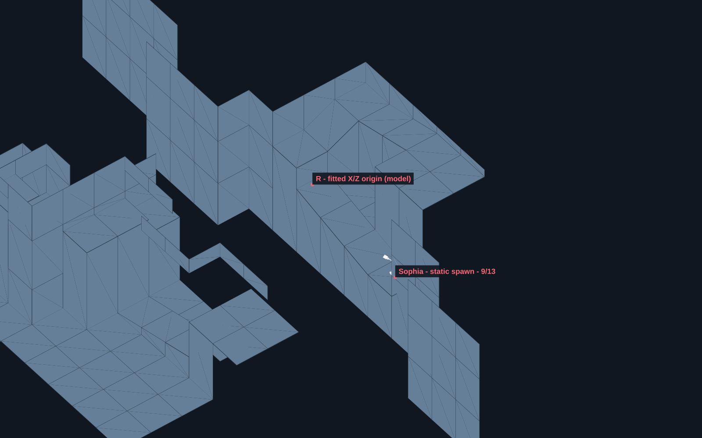
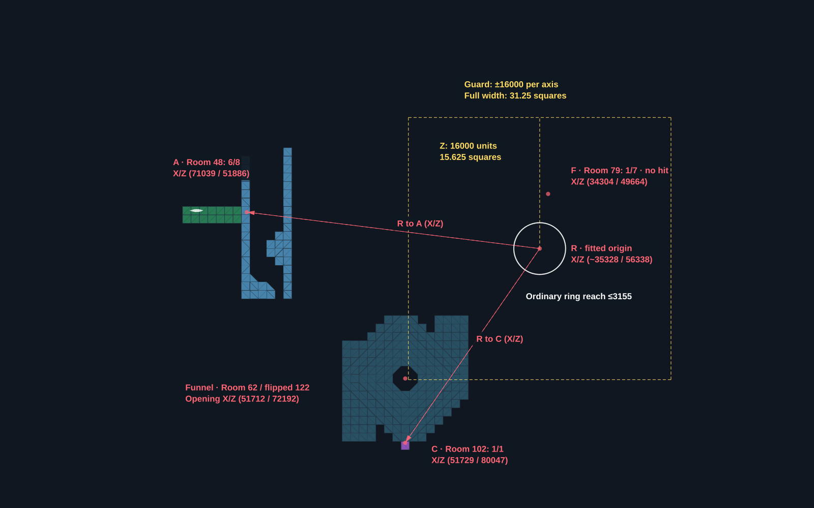
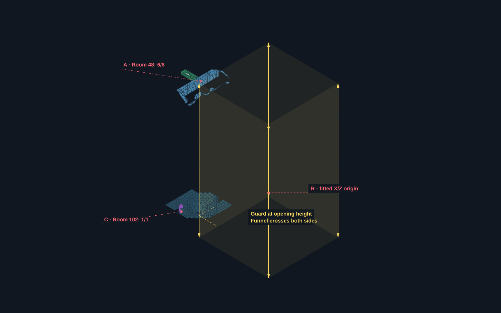
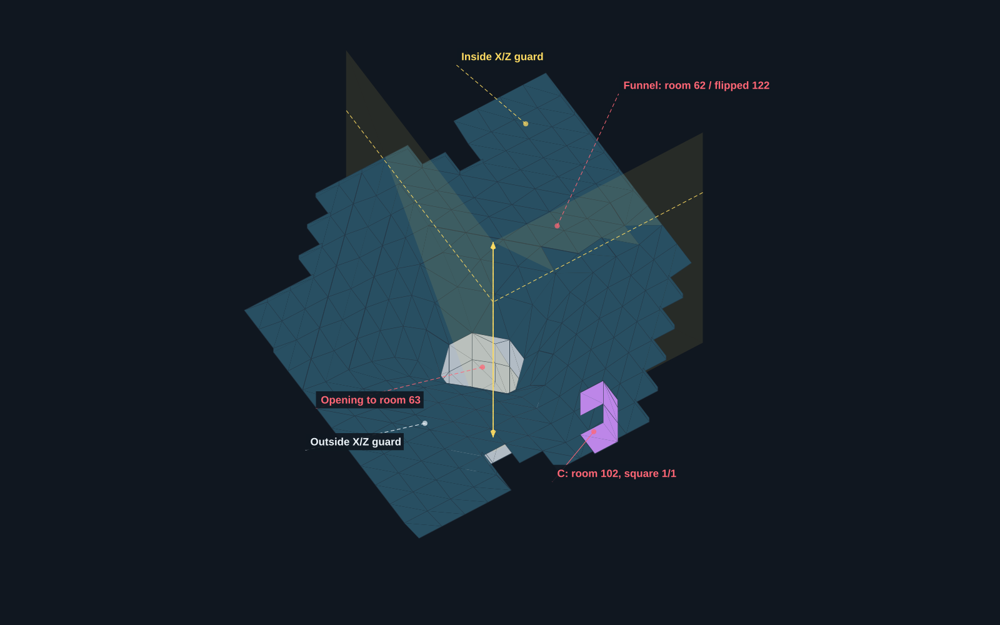
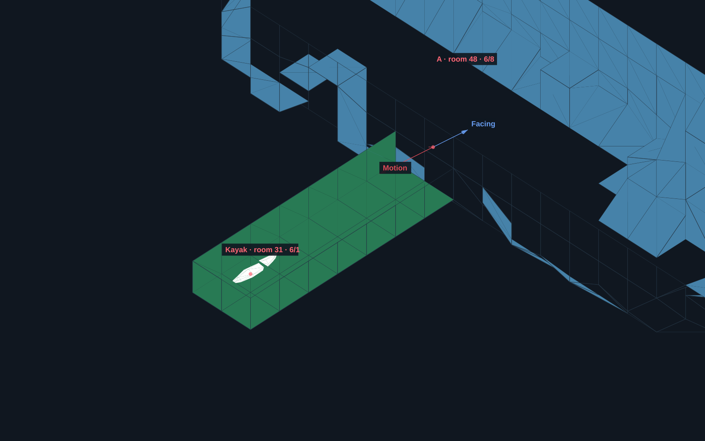
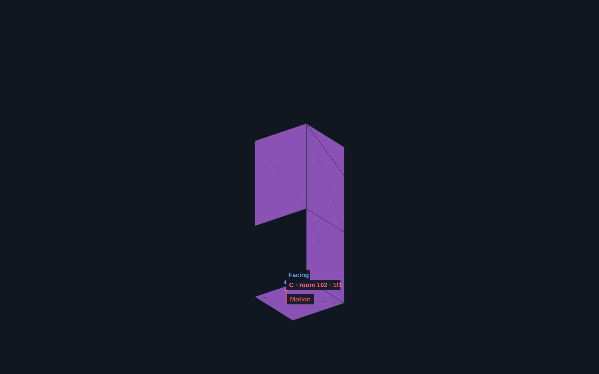
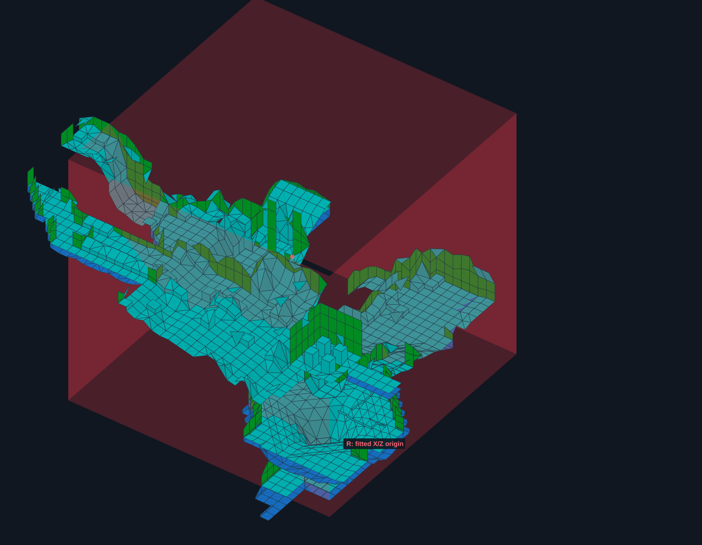

Technical reconstructions · CASE-0016 — Sophia knockback retention across levels · Level Inspector
This page reconstructs a spatial mechanism; it is not a finished route or a promise of a usable glitch application. Reviewed destination observations, static level data and a community TR3 source model are kept distinct. The exact retained Remastered object and its implementation remain unconfirmed.
Color key: red = reference points and outward direction; yellow = guard boundary; white = ordinary ring reach; blue arrows = facing; cyan = wall portals. Color identifies visual role. Evidence status is stated in the text and retained in the scene files.
1. A source effect, a different destination
Preparing Sophia's ring in OFFICE before a hit and then loading a RAPIDS save produced destination knockback in the recorded investigation. A useful working model is that an eligible effect survives with its source origin expressed in the same world coordinates. The coordinates explain spatial selectivity only if the collision consumer survives; that carrier is not yet identified.

A separate preparation produced a newer fit near X/Z 35711.9524 / 56219.4183 (square 9/9). These preparations must not be combined as if they shared a measured origin. The destination overview below uses the older A/B/C preparation.
The box moves with the ring origin
The box is centered on the ring-creation position, not fixed to RAPIDS or to Lara. If Sophia creates the ring at a different X/Z position, all four sides translate by exactly that X/Z change. The width remains 32000 units (31.25 squares). The outward directions at the same destination also change. A change in Y alone does not move this X/Z boundary.
For example, the older fitted origin gives positive edges X=51328 and Z=72338; the newer fit gives X=51712 and Z=72219. These are two source preparations, not two simultaneous boxes. The later operator-confirmed OFFICE surface square 8/8 supplies possible source positions, not a measured ring origin for either historical preparation.
2. The ±16000 boundary is a distance-test branch
For origin R and Lara L, the community reference's KnockBackCollision uses dx = L.X − R.X and dz = L.Z − R.Z. Its decisive fragment is:
if (dx > 16000 || dx < -16000 || dz > 16000 || dz < -16000)
dist = 0x7FFF;
else
dist = dx * dx + dz * dz;
if (dist >= ring->radius * ring->radius)
return 0;One square is 1024 units. The square boundary extends 15.625 square widths per axis, for a full width of 31.25 squares. Exactly ±16000 stays in the ordinary branch. Crossing any one side replaces the squared distance with 32767; crossing both axes is unnecessary.
| Location relative to origin | Distance value | Reference distance result |
|---|---|---|
| Inside/on boundary, within ring | dx² + dz² | Passes strictly inside radius² |
| Inside/on boundary, beyond ring | dx² + dz² | Fails |
| Outside either boundary | 32767 | Passes at radius 768 because 32767 < 589824 |

The fallback changes a comparison value; it does not move the ring or Lara. 32767 is a squared-distance value, equivalent to a distance of about 181 units. An eligible retained ring is still required. The intention behind the guard and the exact Remastered equivalent remain hypotheses.
Delayed activation: the “hold” observation
Preparing the effect, loading a destination inside the guard square but outside ordinary ring reach, and then moving out can defer the hit until movement reaches an eligible position. The box does not itself store or pause the ring: the retained effect must still exist and be eligible when the distance test passes. Being inside the box is not universally safe; near the origin, an ordinary-radius hit can occur.
Reviewed observation: the room-118 dry crossing loaded at X/Y/Z 49664 / −1792 / 70144 without an immediate hit. The last sampled running position was X=51704; the first recovered hit sample was X=51826, with health dropping 1000→800 and an upward kick. This supports delayed activation after movement. It is consistent with the newer fitted X edge near 51712, but does not measure the exact collision boundary or the live origin.
Recording scope: operator gameplay, 17 October 2026, 44.9 seconds; the compressed web copy retains the complete sequence and audio. This replaces the previous publication video. The destination setup inherits diagnostic bridge position/health preparation. The box displays configured source coordinates, not a direct read of the current destination ring. This clip does not independently establish the exact trigger coordinate, ring lifetime or unlimited storage. The numerical samples above belong to the earlier instrumented run, not to this video.
Still open: a matched neutral-source control, longer waiting trials and the ring lifetime. “Hold” here does not mean proven unlimited storage. The newer-fit interpretation of this run must not be overlaid on the older-fit overview as if both were one preparation.
3. The X/Z guard extends vertically

The column represents a branch boundary, not a solid obstacle and not a volume where every position must produce a hit. It separates the ordinary X/Z distance calculation from the fallback outside it. Other eligibility conditions and the unconfirmed Remastered implementation are not resolved by this illustration.
The funnel basin, close up

Room 62 is the water variant; 122 is its dry alternative. This illustration selects 122 explicitly and does not read a save state. The funnel basin slopes toward the central opening to room 63, centered at X/Z 51712 / 72192, Y=9216. Its 3×3-square bounding rectangle has partially closed corner triangles; the full rectangle is not an unobstructed aperture. Room 102 lies at the basin's projected southern edge and higher in the level (Y1024…3840 versus basin Y5120…9216). It is not the funnel itself. The older guard corner X/Z 51328 / 72338 lies close to the central opening; changing the source moves this relationship.
Only wall portal outlines are drawn. The central floor opening is identified by a point and the actual geometry, not a floor-portal outline. Flip/plug state, hazards, access and a usable first no-JUMP launch remain unresolved; this is a geometric explanation, not a proven route.
Blue is room 48, green is tunnel room 31, purple is room 102 and grey is the historical flipped-122 context. Showing room 122 does not establish a live flip state.
4. Motion, facing and the tunnel landmark
The reference model still uses the real dx/dz to determine direction even when its distance test uses the fallback. The initial motion points outward from the origin. Body facing and signed speed are assigned together: facing toward the motion with positive speed or facing away with negative speed are equivalent motion representations.

The wall opening lies on room-48 X-grid line 7 across Z-grid lines 8–10, or room-31 X-grid line 1 across Z-grid lines 1–3. World bounds are X=71680, Z=51200…53248. The short measured trace ends before that portal. The image does not establish arrival at the kayak, boarding, or a complete usable route.

There is no fixed “turn 90 degrees” instruction in this reference model. For R07 the change happened to be −89.906616°; R09 turned +33.931274° and moved backward. Rotating Lara before the event therefore does not by itself choose the launch destination.
| Sample | Room / square X/Z | World X/Z anchor | Initial bearing |
|---|---|---|---|
| A / R06 | 48 · 6/8 | 71039 / 51886 | 97.097168° |
| B / R07 | 50 · 15/10 | 74167 / 54145 | 93.240967° |
| C / R09 | 102 · 1/1 | 51728 / 79973 | 34.755249° |
| D / R13 | 65 · 1/6 | 42496 / 35328 | 162.009888° |
| E / R15 | 81 · 1/8 | 34624 / 55872 | 252.290039° |
Bearings use atan2(dx,dz): 0° is +Z and 90° is +X. Table anchors retain their historical roles; they are not all pre-hit saves. The scene's C marker uses the first hit sample (51729,3796,80047), not the table's setup anchor. Arrow lengths are illustrative, and yaw/signed-speed bearings are distinct from sampled position deltas.
5. What happens after the initial hit?
Vertical motion: the reference kick sets fall speed to −50 before gravity continues. X/Z-only eligibility does not mean flight has no vertical component; floors, ceilings and walls still matter.
Reviewed underwater result: in room 103, a transferred hit displaced submerged Lara; she then stood on the underwater floor while the visible air bar kept decreasing. This does not establish the same behavior in the funnel's currents or piranha hazards.
Operator-reported follow-ups: small left/right steering corrections during flight; backward wall passage followed by upward placement on a platform; repeated advance using successive airborne destination saves and renewed Sophia preparation. These are not a reviewed complete chained route. Collision speed and floor correction are possible explanations for the wall result, not demonstrated causes. No usable first no-JUMP funnel launch has been established.
6. Load, inspect and reproduce these views
Open the Level Inspector, load your matching OFFICE.TR2 or RAPIDS.TR2 file, then choose Scene & annotations → Load scene. Each scene below includes a texture-free SVG with vector faces, arrows and editable labels, without the PNG title/footer. The OFFICE SVG uses flat colors. Transparent overlaps use approximate depth sorting. Scenes contain camera settings, selected rooms, colors, shapes and markers, not game assets. Save scene preserves your current view; Export PNG renders it at the configured resolution.

RAPIDS column / all intersecting rooms
46 normal and alternate room records, with TRView colors and transparent red column sides.
Funnel / guard close-up
RAPIDS · basin 62 / dry variant 122; rooms 63 and 102
Oblique detail of the basin and nearby guard corner.OFFICE origin
OFFICE · room 8; Sophia square 9/13
Untextured cutaway with static Sophia and the fitted origin.X/Z overview
RAPIDS · rooms 48, 31, 102 and 122
Top view with R, A, C and F; room/square and world X/Z labels.Open column
RAPIDS · rooms 48, 31, 102 and 122
Whole guard column in 3D; no Y limit in the reference test.Tunnel / kayak
RAPIDS · room 48, square 6/8 → room 31, square 6/1
Oblique tunnel view with kayak, motion and facing.Room 102
RAPIDS · room 102, square 1/1
Oblique room detail with portal markers hidden.


For analysis, enable local room/square labels and optional world X/Z square-center values. Square indices are zero-based. World position = room origin + square index ×1024 + within-square offset; a square center has offset 512/512. Waypoint inputs use world X/Y/Z. “Measure last two” measures straight 3D distance, not a reachable route. Negative Y is higher.
Level identity and reconstruction limits
TR3 Remastered build 25209630; classic level geometry and reference-pose objects, not HD assets or a running gameplay simulation.
OFFICE SHA-256: c2c9de7a90d0d20ae74cb973a8e255f6410ecd16d224ff22bc5c109d99365ea2
RAPIDS SHA-256: b8bb67296f6fecf4671a246cbba5360f55013fe1a03038c7a7e9d49f866a9962
Community tomb3 reference commit: bfeef1d4d7165b6d8cb9079870c1fc0f083b054c. Cutaways omit ceiling faces. Portals show decoded openings, not proven traversability. The images add no new gameplay evidence. Exact-save neutral controls, retained-state identity and a usable first no-JUMP funnel launch remain unresolved. Air-save chaining remains operator-reported.
Maintained evidence and current case status: CASE-0016 — Sophia knockback retention across levels. This technical reconstruction does not raise the case's verification status.